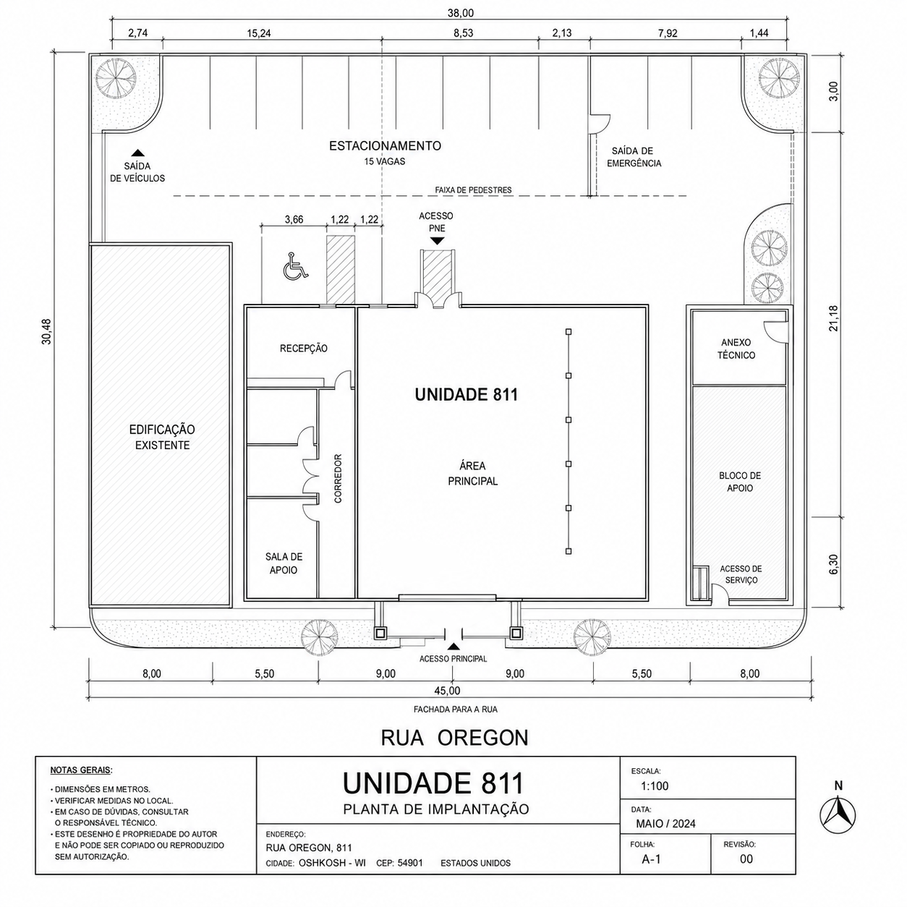

Menos exterior
A ausência de vista reduz interferências visuais urbanas e preserva a atenção onde ela realmente produz resultado.
Campus interno
para operações
sem ruído externo
Metragem contínua, iluminação estável e disponibilidade imediata para equipes que exigem concentração prolongada, discrição e permanência.
Sobre o espaço
Nem todo ambiente precisa disputar atenção para provar valor. O Oregon 811 foi concebido para operações que se beneficiam de continuidade, silêncio estrutural e uma relação mais controlada com o tempo.
A ausência de vista reduz interferências visuais urbanas e preserva a atenção onde ela realmente produz resultado.
A repetição material reduz atrito visual. A profundidade protege. A constância organiza.
O espaço não foi pensado para impressionar na chegada. Ele melhora quando a operação encontra ritmo.
Estabilidade visual em qualquer horário, sem interferência climática, sem janelas e sem variações externas competindo pela atenção.
A ocupação começa pequena e cresce sem ruptura perceptível, mantendo coesão material, repetição espacial e continuidade operacional.
Sem fluxo casual, sem vitrines de equipe e sem exposição involuntária da rotina de trabalho.
Acesso acompanhado, percurso assimilável e confirmação de retorno para clientes que precisam entender antes de permanecer.
Planta de implantação
A seção de planta passa a assumir a lógica documental do projeto: um ativo na Rua Oregon, com leitura de implantação, estacionamento, acessos, saída de veículos e os blocos 811, 807 e 801 como referências formais do empreendimento impossível.

Sala de reconhecimento e ponto de transição para permanência.
Setor Leste, bloco contínuo para ocupação progressiva.
Edificação paralela, isolada do fluxo principal.
Há espaços que impressionam na chegada e se esgotam em minutos. O Oregon 811 funciona ao contrário.
Para células compactas, lideranças, pesquisa, escrita, estratégia e trabalho profundo.
Para times que operam por blocos, demandam adjacência entre setores e valorizam expansão sem espetáculo.
Para permanência estendida, protocolos reservados e continuidade operacional acima da média.
Depoimentos
“Fechamos um trimestre inteiro aqui. Só percebemos quando tivemos de sair.”
“Existe uma serenidade rara em ambientes que não tentam ser inspiradores o tempo todo.”
“Eu vim pela metragem. Fiquei pela constância.”
CTA final
Se a sua operação exige menos distração, menos ruído e mais permanência, solicite uma visita de reconhecimento e receba uma proposta de ocupação compatível com o seu nível de continuidade.
Trabalhamos com estabilidade lumínica e menor interferência externa.
Ela é definida pelo programa de uso e pelas necessidades de progressão da ocupação.
Sim. Recomendamos visita acompanhada de reconhecimento.
Ela é eficiente após o primeiro reconhecimento.